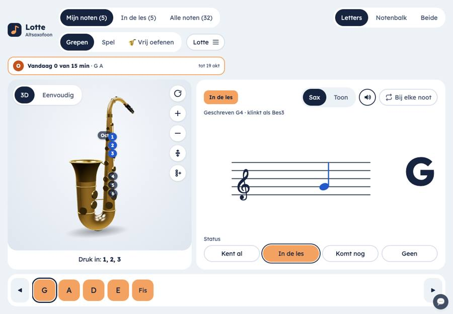
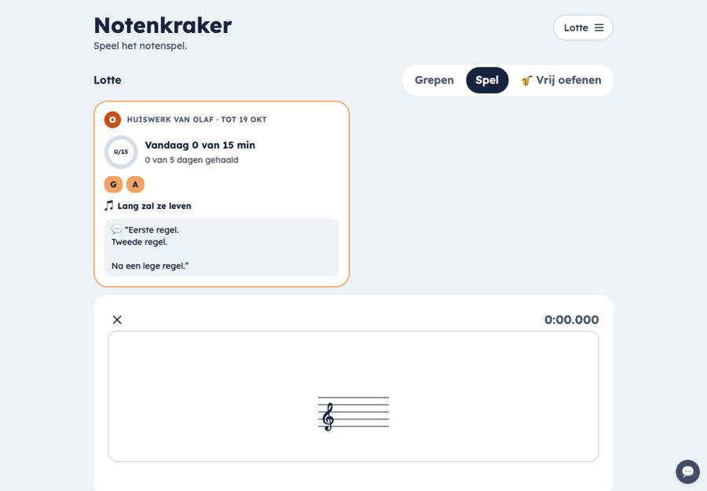
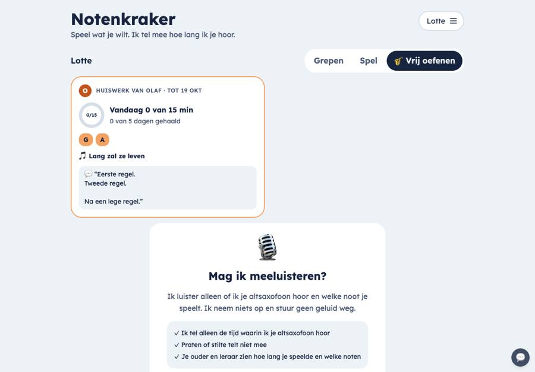
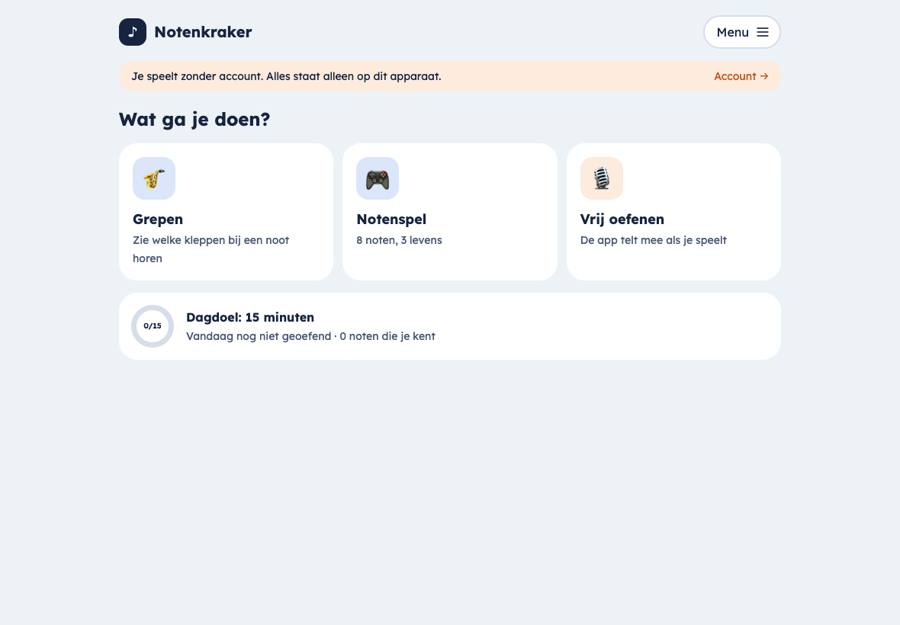

Een kijk op de huidige schermen, met de leerling op de iPad voorop: wat je nu ziet, wat er schuurt, een plan in vijf principes, drie richtingen om uit te kiezen en de beslissingen die bij jou liggen.
Zo is het nu: de leerling op de iPad
Ingelogd als Lotte (9–12 jaar, met huiswerk van haar ouder). Schuif opzij voor meer schermen.
iPad liggend

Grepen: drie rijen keuzes linksboven, huiswerkregel, sax, notenkaart, status en notenbalk onderin.

Notenspel: de huiswerkkaart staat bovenaan; de knop Spelen valt onder de rand.

Vrij oefenen: weer de huiswerkkaart, dan pas de uitleg.

Zonder account is er wél een startscherm met drie tegels. Met account niet.
24tikbare dingen op het Grepen-scherm (4 filters en weergaven, 3 onderdelen, Sax/Toon, geluid, herhalen, 4 statussen, 3D/Eenvoudig, 5 sax-knoppen, de notenrij). Een kind van 9 ziet eerst knoppen, dan pas de noot.2×dezelfde navigatie: Grepen / Spel / Vrij oefenen staat als schakelaar op de pagina én als “Oefenen” in het menu. Het menu bevat verder vooral dingen die je zelden nodig hebt.3verschillende kopteksten: Grepen heeft logo + naam, Spel en Vrij oefenen tonen “Notenkraker” met een uitlegregel en daaronder nog eens “Lotte”.
1huiswerkkaart die bij elk onderdeel opnieuw bovenaan staat en het spel naar beneden duwt. Huiswerk is overal en nergens: er is geen plek waar je ziet wat je vandaag moet doen.0startscherm voor een leerling met account. Je valt direct in Grepen. Zonder account is er wel een startscherm; dat is de beste plek die we nu hebben.½van het iPad-scherm blijft leeg bij Spel en Vrij oefenen (de inhoud is 900 px breed). De hoofdknop Spelen staat onderaan, onder uitleg en instellingen.
Plan in vijf principes
Eén ding per scherm
Elk scherm heeft één hoofdactie in oranje. Alles wat je zelden nodig hebt, gaat naar een eigen pagina (bijvoorbeeld “Weergave”).
Vaste plek voor navigatie
Onderaan een tabbalk met hooguit vier plekken. Het menu rechtsboven wordt alleen “ik”: profiel, uitloggen.
Huiswerk heeft een thuis
Eén plek waar je ziet wat er vandaag moet; in de oefenschermen hooguit één dunne regel.
Oefenen is focus
Tijdens spelen of opnemen verdwijnt alles behalve de muziek en een duidelijke “Klaar”.
Het hele iPad-scherm
Liggend naast elkaar (sax en noot, of taken en tegels), staand onder elkaar. Grote doelen voor kinderhanden.
Variant A: dezelfde schermen, rustiger
kleinste stap
De indeling blijft Grepen / Spel / Vrij oefenen, maar met één kopregel, een tabbalk onderin en de instellingen achter “Weergave”.
♪GrepenWeergaveL
Huiswerk van Olaf · vandaag 0 van 15 min ›
In de les🔊 Luister
G
Druk in: 1, 2, 3
GADEFismijn noten ▾
🎷Grepen
🎮Spel
🎙️Vrij oefenen
📝Huiswerk
Grepen: van 24 naar 11 tikbare dingen. Filter, Letters/Notenbalk, Sax/Toon en 3D staan op de pagina “Weergave”; de status zet de leraar.
♪NotenspelWeergaveL
Huiswerk van Olaf · vandaag 0 van 15 min ›
▶ Spelen
8 noten · 3 levens · beste tijd 8 s
🎷Grepen
🎮Spel
🎙️Vrij oefenen
📝Huiswerk
Spel: Spelen in het midden, direct zichtbaar. Knoppen of microfoon staat bij Weergave.
SterkWeinig nieuw te bouwen; alles blijft herkenbaar voor wie de app al kent.
ZwakNog steeds geen antwoord op “wat moet ik vandaag doen?”. Huiswerk wordt een vierde tab naast de oefeningen.
Variant B: Vandaag
mijn voorkeur
De leerling begint op “Vandaag”: wat er moet, met één grote knop. Oefenen gebeurt in een rustig scherm met alleen de muziek en “Klaar”.
Hoi Lottezaterdag 12 oktoberL
0/15
Vandaag
Huiswerk van Olaf en Marieke · tot zaterdag
15 minuten oefenen notenspel of vrij spelen telt meeG A
🎙️Lang zal ze leven opnemen Methode 1 · blz. 23 · track 17
Notenalfabet achteruit
Begin met oefenen
🎮Notenspel 8 noten, 3 levens
🎷Grepen opzoeken welke kleppen bij een noot
🎙️Vrij spelen de app telt mee
☀️Vandaag
🎮Spelen
🎷Grepen
🙂Ik
Vandaag: één ring, een korte takenlijst uit al het huiswerk samen, één oranje knop die de eerstvolgende taak start. Rechts de drie dingen die je altijd kunt doen.
✕ Klaar♥ ♥ ♥0:04
Noot 3 van 8 · welke noot is dit?
CDEFGAB
Spelen in focus: geen tabbalk, geen huiswerkkaart, geen instellingen. Alleen levens, tijd, de noot en grote antwoordknoppen. Na “Klaar” terug naar Vandaag, met de ring bijgewerkt.
Een taak openen: alles voor die ene taak op één pagina (bladmuziek, voorbeeld, opnemen).
SterkBeantwoordt meteen “wat moet ik doen?”. Kinderen hoeven niets te kiezen: één knop. Huiswerk van ouder en leraar komt samen in één lijst. Werkt ook zonder account (dan zonder huiswerk, met het dagdoel).
ZwakNieuw startscherm en een focusmodus bouwen. Voor wie geen huiswerk heeft, moet Vandaag nog steeds zinvol zijn (dagdoel en voorstel).
Variant C: de lessenaar
grootste stap
De iPad wordt een muziekstandaard. Eén donkere “oefenruimte” met de noot groot in het midden, de onderdelen als iconen aan de rand en het huiswerk als vaste zijkolom.
L🎷🎮🎙️
G
GADEFis
Huiswerk
0 van 15 min vandaag
☐ 15 min oefenen
🎙️ Lang zal ze leven
☑ Alfabet achteruit
Begin
Eén ruimte, geen pagina’s: links kies je wat je doet, in het midden de lessenaar, rechts altijd je huiswerk.
L🎷🎮🎙️
G
GADEFis
Huiswerk · 0 van 15 min · 3 taken ›
Staand schuift het huiswerk naar onderen als één regel.
SterkHet meest eigen en het meest “muziek”: de app voelt als een instrument, niet als een website. Weinig navigatie.
ZwakGrootste verbouwing en een nieuwe donkere stijl naast basislook A. Op een iPhone is er te weinig ruimte voor drie kolommen; ouder en leraar passen er niet in.
Waarom B
De leerling heeft de hoogste prioriteit, en een leerling van 9 heeft vooral één vraag: wat moet ik nu doen? B is de enige variant die die vraag op het eerste scherm beantwoordt, zonder dat het kind iets hoeft te kiezen. De focusmodus haalt de drukte weg op het moment dat het telt: tijdens het spelen. Uit A nemen we de pagina “Weergave” mee, uit C de grote noot en de notenrij als vaste plek. B past binnen basislook A en werkt op iPad staand, liggend en op de iPhone.
Ouder en leraar (kort)
Wat er schuurt
Het menu van een leraar heeft 9 items: Overzicht, Oefenen, Mijn leerlingen, Opdrachtenbank, Sjablonen, Mijn boeken, Mijn profiel, Welkomstpagina, Uitloggen.
De kindpagina is één lange rol van zes blokken; huiswerk, oefentijd, spel en noten door elkaar.
Huiswerk geven is één lange pagina van zeven onderdelen.
“Overzicht” en “Mijn kinderen/leerlingen” tonen bijna hetzelfde.
Bibliotheek = Opdrachtenbank, Sjablonen en Mijn boeken samen, met drie tabbladen.
Kindpagina met tabbladen Huiswerk · Oefentijd · Noten en één knop “Huiswerk geven”.
Huiswerk geven in drie stappen: Wat (noten en opdrachten) · Doel (minuten, dagen, tot wanneer) · Versturen.
♪Notenkraker
👥 Leerlingen
📝 Huiswerk
📚 Bibliotheek
🙂 Ik
← Leerlingen
LLotteHuiswerk geven
HuiswerkOefentijdNoten
MMarieke · tot zaterdaggaat goed
15 min per dag · 2 van 5 dagen
🎙️Lang zal ze leven · opname ingestuurd▶
Notenalfabet achteruit
Olaf · Lang zal ze leven · tot zaterdag
Leraar op de iPad: zijbalk met vier plekken, de kindpagina in tabbladen, één knop “Huiswerk geven”.
Jouw beslissingen
Voor de leerling eerst; de laatste drie gaan over ouder en leraar.
Welke richting voor de leerling?
A (zelfde schermen, rustiger), B (Vandaag) of C (lessenaar). Advies: B.
Startscherm van de leerling
Begin op “Vandaag” met het huiswerk, of meteen in een oefening zoals nu. Advies: Vandaag.
Navigatie
Een tabbalk onderin met vier plekken (Vandaag, Spelen, Grepen, Ik) in plaats van het menu rechtsboven. Advies: tabbalk; het menu wordt alleen “Ik”.
Wie zet de status van een noot?
Nu kan de leerling op het Grepen-scherm zelf kiezen tussen Kent al, In de les, Komt nog en Geen. Mag dat blijven, of doen ouder en leraar dat? Advies: alleen ouder en leraar; de leerling ziet de status en het spel promoveert noten vanzelf.
Wat gaat naar “Weergave”?
Mijn noten / In de les / Alle, Letters / Notenbalk / Beide, Sax / Toon, 3D / Eenvoudig, Bij elke noot, Knoppen / microfoon. Advies: allemaal; op het scherm blijven alleen Luister en de notenrij.
Vrij oefenen als eigen onderdeel?
Houden als tegel op Vandaag, of laten opgaan in “15 minuten oefenen” (de timer loopt dan bij elke oefening). Advies: tegel houden, want de microfoon-uitleg is een eigen moment.
Zonder account dezelfde indeling?
Vandaag zonder huiswerk, met het dagdoel en een voorstel (“speel 5 minuten het notenspel”). Advies: ja, één indeling voor iedereen.
Bibliotheek samenvoegen
Opdrachtenbank, Sjablonen en Mijn boeken als één plek met tabbladen. Advies: ja.
Kindpagina in tabbladen
Huiswerk · Oefentijd · Noten in plaats van één lange pagina. Advies: ja.
Huiswerk geven in stappen
Wat · Doel · Versturen, of één pagina met inklapbare delen. Advies: stappen op de iPhone, één pagina met twee kolommen op iPad en desktop.
Volgende stap
Na jouw keuzes maak ik de gekozen richting af als volledige mock-up (alle leerlingschermen, iPad staand en liggend, plus iPhone), en daarna een bouwplan in kleine PR’s: eerst Vandaag en de tabbalk, dan de focusmodus, dan Weergave, dan ouder en leraar.